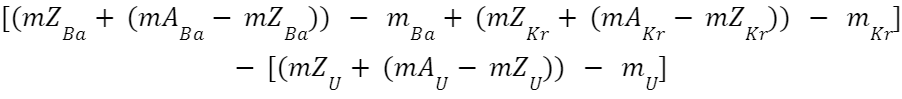
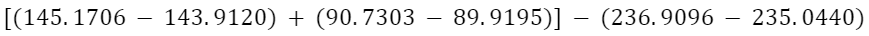
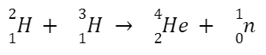

The following research paper is a documentation of my findings when comparing the energy released in fission and fusion reactions using calculations involving binding energy.
Fission and fusion are two extremely powerful ways to release energy through a series of reactions, both doing so in slightly different ways. Fission involves large nuclei, such as Uranium-235, splitting into two smaller nuclei on bombarding the large nucleus with high speed neutrons. Fusion however, starts with two much smaller nuclei, and with extreme amounts of kinetic energy and pressure, these two nuclei can fuse together to create one larger nucleus and various by-products. But all this begs the question:
How much energy do these reactions actually release?
Let’s start with the binding energy of a nucleus. A nucleus’ binding energy is the atomic mass of the atom subtracted from the sum of the mass of all its protons and neutrons. For example:
We know that the atomic mass of a proton is 1.00728u, and the atomic mass of a neutron is 1.00867. Using this information, we can find the difference in the atomic mass of two neutrons and two protons, and the helium nucleus.
Atomic mass of helium: 4.0026u
| Protons | Neutrons | Total atomic mass | Surplus mass |
| 2 | 2 | 4.0319 | 0.0293 |
After subtracting the actual mass of helium from the mass of two neutrons and two protons, we get a remaining mass of 0.0293u. At the subatomic level, we can say that mass and energy are interchangeable, and every mass has an energy equivalent. The energy equivalent of a given mass (in atomic units) can be found by multiplying the mass by 931.5, as:
1 MeV is the equivalent of 1.60 × 10-13J, and we find that the surplus mass equates to 27.2930 MeV. We call this surplus of energy ‘binding energy’, which is the energy required to pull each of the nucleons apart one by one. Therefore, the binding energy of each nucleon is around 6.8 MeV. Binding energy is vital because the total energy released in fission and fusion reactions is equal to the change in binding energy between the reactants and the products.
The two most common products in the fission of uranium-235 are barium-144 and krypton-90. Using this information, we can calculate the energy produced in one fission event of uranium-235 (the only fissionable isotope of uranium), by doing the following:
This calculation will find us the additional binding energy after the reaction. Subbing in the numbers, we get:
Multiply this number by the number of nucleons in uranium-235 (235), and we get an energy release of ~200 MeV per fission reaction, which is equivalent to around 3.04 × 10^-11 J. This means that 1 gram of 100% fissioned uranium-235 would release around 7.79 × 10^10 J of energy.
That’s about the energy-equivalent of a freight train travelling at 260 miles per hour.
In order to compare fission and fusion, we need to have an idea of the magnitude of energy that is released in fission.
As mentioned previously, the sum of all the energy released from a fission or fusion reaction is equal to the increase in binding energy after the reaction. We can calculate from the fission calculation involving barium-144 and krypton-90 that each uranium-235 nucleon has around 7.395 MeV of binding energy, whereas the average binding energy of each of the nucleons in the products of the reaction are around 8.265 MeV, meaning there was approximately a 0.87 MeV increase in binding energy per nucleon.
I looked at the fusion reactions that take place in the JET fusion reactor in the UK, in which deuterium and tritium are used as the reactants, giving us the following reaction:
A deuterium atom and a tritium atom fuse together under extreme pressure and temperature (often of the magnitude of around 1.50 × 10^8 K or 150 million degrees celsius) to form helium along with an isolated neutron. Strong magnetic fields are used to keep the extremely hot plasma away from touching the walls to avoid complete vaporisation of the fusion reactor chamber.
To find the increase in binding energy in the fusion of helium, we need to find the binding energy of deuterium, tritium and helium. By using the formula stated before, we get the following values for binding energy:
| Deuterium | Tritium | Helium | Total EB increase |
| 1.8164 MeV | 8.0295 MeV | 27.2911 MeV | 17.4452 MeV |
A 17.4452 MeV increase in binding energy per atom of helium fused means that 17.4452 MeV of energy is released each time a fusion reaction event occurs. Dividing this by the number of nucleons in helium, we get a binding energy increase of 4.3613 MeV per nucleon - a much more significant amount than the 0.87 MeV energy release per fission event of uranium-235. This large difference in binding energy of the products of fusion compared to the products of fission is the reason why fusion releases so much more energy than fission per gram of fuel. In 1 gram of fusible deuterium and tritium, there is an energy release of around 3.36 × 10^11 J.
This has the energy-equivalent of a freight train travelling as fast as a commercial airliner.
To conclude, we can compare the energy released by both fission and fusion by dividing one by the other. Doing this, we find that the energy released by 1 gram of fusible substance is around 4.3× larger than the energy released by 1 gram of fissile uranium-235.
Despite the substantial increase in energy efficiency in fusion reactions, the conditions required for fusion to occur, even at the lowest level, do not make it practical for industrial use in power generation. Fusion most commonly occurs in stars, fusing elements as heavy as lead and iron. Immense pressure and temperatures are needed to form such heavy elements, and so these elements can only be formed inside the hottest and most dense of stars.
Although many heavy elements found on Earth were formed by stars long ago, it is likely that humans will never be able to fuse such elements with the conditions and resources on our planet.
Maybe it’s best to admire from afar.